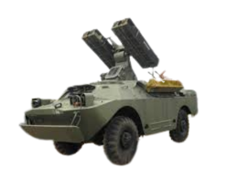

Strela-1

Overview
Type: Short-range, low-altitude surface-to-air missile system (SHORAD)
Origin: Soviet Union
Service entry: 1968
Primary role: Mobile protection of motor-rifle/tank units from low-flying aircraft & helicopters
Chassis: BRDM-2 4×4 amphibious armored scout car
Crew: 2–3 (driver, commander/gunner)
Missile
Designation: 9M31
Guidance: Passive infrared homing (early-gen, uncooled seeker)
Launchers: 4 ready-to-fire missiles (two twin-rail mounts)
Missile length: ~1.8 m
Diameter: ~120 mm
Weight: ~30 kg
Warhead: 2.6–3 kg high-explosive fragmentation
Fuze: Contact & proximity
Speed: ~Mach 1.5–1.8 (~500 m/s)
Effective range: 0.8 – 4.2 km
Effective altitude: 50 m – 3.5 km
Pk vs maneuvering jet: ~0.15–0.25 per shot (low by modern standards)
Vehicle (BRDM-2)
Combat weight: ~7 t
Engine: GAZ-41 V-8 gasoline, 140 hp
Road speed: ~100 km/h
Water speed: ~10 km/h (amphibious)
Operational range: ~750 km on roads
Protection: Light armor (resistant to small-arms & splinters)
Operational Notes
Daylight / clear-weather system — no search or tracking radar; relied on optical aiming.
Provided low-altitude cover for Soviet & Warsaw-Pact regimental units.
Vulnerable to countermeasures (flares, bad weather, night).
Superseded in the late 1970s–80s by 9K35 Strela-10 (SA-13 “Gopher”), which added better seeker & tracking.